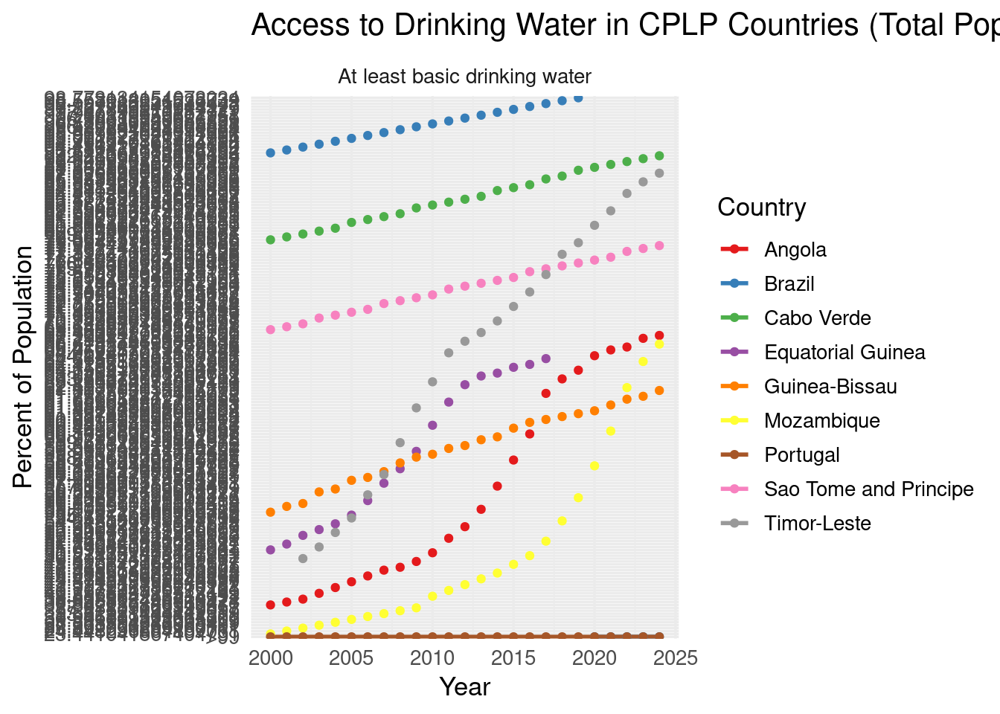
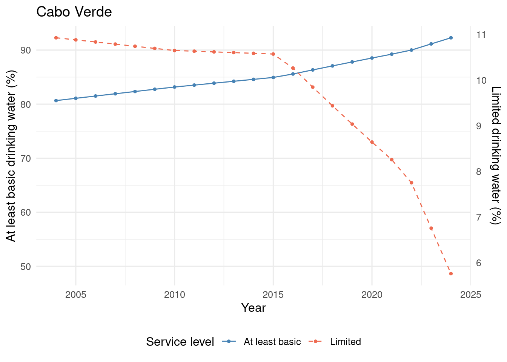
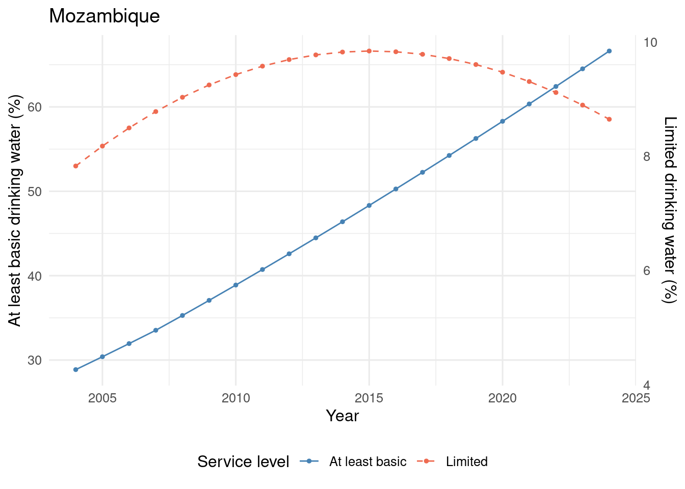
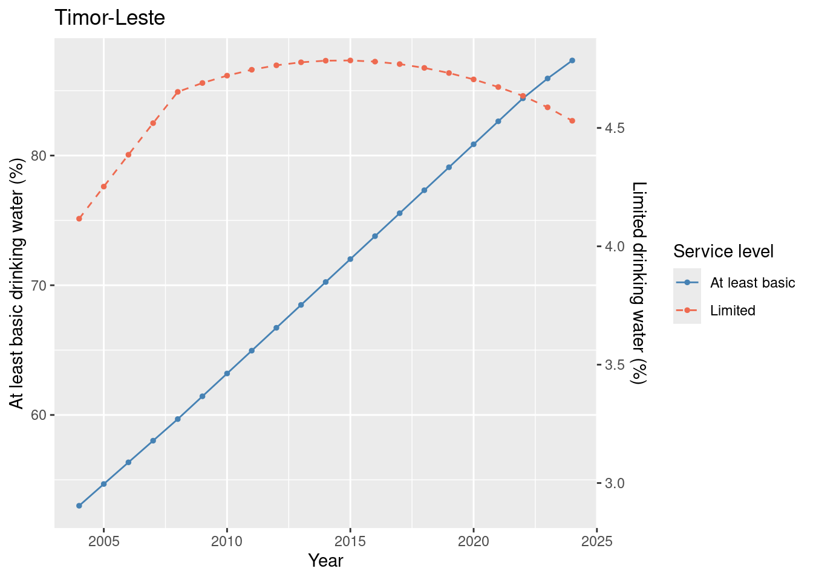

Code
# load packages
library(tidyverse)
library(ggthemes)
library(here)
library(knitr)
library(gt)Sílvia Paiva ![]()
Although water covers most of the Earth’s surface, only a tiny fraction is available as accessible freshwater for human use. Ensuring safe and reliable drinking water has become a global priority as population growth, environmental pressures, and infrastructural inequalities intensify challenges to water security [@arora2022]. To track progress toward universal access, the WHO/UNICEF Joint Monitoring Programme (JMP) compiles global data estimates on drinking water services across countries and over time. This project uses these data to examine trends in drinking water access among Portuguese-speaking countries (CPLP) and to compare inequalities between rural and urban populations.
The data used in this project were obtained from the WHO/UNICEF JMP (https://washdata.org/data). The dataset includes country-level drinking water indicators reported between 2000 and 2024, along with associated demographic and socioeconomic classifications such as SDG region, income group, and population. Data were downloaded in raw Excel format and processed to standardise variable names, reconstruct multi-row headers, and convert the wide-format service-level indicators into a tidy long format. For the purposes of this analysis, the dataset was restricted to CPLP (e.g., at least basic, limited, unimproved, safely managed) and filtered to retain information relevant to drinking water access across rural, urban, and total populations.
# load packages
library(tidyverse)
library(ggthemes)
library(here)
library(knitr)
library(gt)# import processed data
water <- read_csv(here::here("data/processed/water_data_long.csv"))
# filter data for CPLP countries
water_cplp <- water |>
filter(country %in% c("Portugal", "Brazil", "Angola", "Cabo Verde",
"Guinea-Bissau", "Mozambique",
"Sao Tome and Principe", "Timor-Leste"))To evaluate progress in access to drinking water across CPLP countries, I first compared rural and urban populations in terms of access to “at least basic” and “limited” drinking water services in 2004 (@fig-1) and 2024 (@fig-2). These comparisons provide a baseline and endpoint view of inequalities and overall improvements over the 20-year period.
# check the differences in accessing drinking water between rural and urban populations
water_cplp_access_2004 <- water_cplp |>
filter(
year == 2004,
varname_short %in% c("wat_bas", "wat_lim"),
residence != "Total") |>
mutate(
percent = parse_number(percent)) # handles values like >99%
ggplot(data = water_cplp_access_2004,
mapping = aes(x = residence,
y = percent,
fill = varname_long)) +
geom_col() +
facet_wrap(~country) +
scale_fill_calc() +
geom_text(aes(label = round(percent, 1)),
position = position_stack(vjust = 0.5),
size = 3,
colour = "white")# check the differences in accessing drinking water between rural and urban populations
water_cplp_access_2024 <- water_cplp |>
filter(
year == 2024,
varname_short %in% c("wat_bas", "wat_lim"),
residence != "Total") |>
mutate(
percent = parse_number(percent)) # handles values like >99%
ggplot(data = water_cplp_access_2024,
mapping = aes(x = residence,
y = percent,
fill = varname_long)) +
geom_col() +
facet_wrap(~country) +
scale_fill_calc() +
geom_text(aes(label = round(percent, 1)),
position = position_stack(vjust = 0.5),
size = 3,
colour = "white")All CPLP countries improved access to at least basic drinking water between 2004 and 2024, though the extent of progress varied considerably across countries.
Access to at least basic drinking water remains substantially higher than reliance on limited services in both rural and urban populations.
Rural–urban inequalities are most pronounced in Angola, Guinea-Bissau, and Mozambique, where rural populations continue to have the lowest levels of basic water access.
Angola, Guinea-Bissau, Mozambique, São Tomé and Príncipe, and Timor-Leste show increased reliance on limited drinking water services in 2024, indicating uneven or incomplete progress despite gains in basic access.
The dual-axis plots illustrate how Angola, Cabo Verde, Mozambique, and Timor-Lest service levels have changed over the past two decades.
# summarise the evolution in access to drinking water in cplp between 2004 and 2024
water_cplp_evol <- water_cplp |>
filter(
residence == "Total",
varname_short %in% c("wat_bas", "wat_lim"),
year >= 2004,
year <= 2024
) |>
mutate(percent = parse_number(percent)) |>
select(country, year, varname_short, percent) |>
pivot_wider(
names_from = varname_short,
values_from = percent)
# select country for analysis - write country of interest
country_to_plot <- c("Angola", "Cabo Verde", "Mozambique", "Timor-Leste")
for (country_loop in country_to_plot) {
df_country <- water_cplp_evol |>
filter(country == country_loop)
# Compute a scale factor to enable overlay with wat_lim on the same plot:
max_bas <- max(df_country$wat_bas, na.rm = TRUE)
max_lim <- max(df_country$wat_lim, na.rm = TRUE)
scale_factor <- max_bas / max_lim
# plot evolution for each selected country
plot <- ggplot(data = df_country,
mapping = aes(x = year)) +
# Left axis: wat_bas
geom_point(aes(y = wat_bas, colour = "At least basic"), size = 1) +
geom_line(aes(y = wat_bas, colour = "At least basic"), linewidth = 0.5) +
# Right axis: wat_lim (rescaled)
geom_point(aes(y = wat_lim * scale_factor, colour = "Limited"), size = 1) +
geom_line(aes(y = wat_lim * scale_factor, colour = "Limited"),
linewidth = 0.5, linetype = "dashed") +
scale_colour_manual(
values = c("At least basic" = "steelblue", "Limited" = "coral2"),
name = "Service level") +
labs(title = paste(country_loop),
x = "Year",
y = "Percentage (%)") +
scale_y_continuous(
name = "At least basic drinking water (%)",
sec.axis = sec_axis(~ . / scale_factor, name = "Limited drinking water (%)"))
print(plot) # VERY IMPORTANT to show the plot inside the loop
}



I compared access to at least basic drinking water in each CPLP country with the corresponding SDG regional average for the years 2004 and 2024. These comparisons illustrate whether countries are performing above, below, or in line with broader regional trajectories.
# summarise the progress in access to drinking water in each sdg_region between 2004 and 2024
water_region <- water |>
filter(
varname_short == "wat_bas",
residence == "Total",
year >= 2004,
year <= 2024
) |>
mutate(
percent = na_if(percent, "-"),
percent = parse_number(percent)) |>
group_by(sdg_region, year) |>
summarise(
regional_mean = mean(percent, na.rm = TRUE),
.groups = "drop"
)
# Compare access to drinking water in cplp to corresponding sdg_region
cplp_iso3 <- c("PRT","BRA","AGO","CPV","GNB","MOZ","STP","TLS")
water_cplp_vs_region <- water |>
filter(
iso3 %in% cplp_iso3,
varname_short == "wat_bas",
residence == "Total",
year >= 2004,
year <= 2024
) |>
mutate(
percent = na_if(percent, "-"),
percent = parse_number(percent)
) |>
left_join(
water_region,
by = c("sdg_region", "year") # join CPLP rows to their region-year means
) |>
mutate(
diff_from_region = percent - regional_mean, # positive = better than region
level_to_region = case_when(
diff_from_region > 0 ~ "Above regional average",
diff_from_region < 0 ~ "Below regional average",
TRUE ~ "At regional average"
)
)
#| label: tbl-region2004
#| tbl-cap: Access to at least basic drinking water in CPLP countries vs regional averages in 2004.
water_cplp_vs_region |>
filter(year == 2004) |>
select(country, sdg_region, percent, regional_mean, level_to_region) |>
mutate(
percent = round(percent, 1),
regional_mean = round(regional_mean, 1)) |>
gt(groupname_col = "varname_short") |>
tab_header(
title = "Access to at least basic drinking water in CPLP countries vs regional averages in 2004.") |>
cols_label(
country = "Country",
sdg_region = "SDG Region",
percent = "Country (%)",
regional_mean = "Regional Mean (%)",
level_to_region = "Level to Region") |>
fmt_number(columns = c(percent, regional_mean),
decimals = 1)| Access to at least basic drinking water in CPLP countries vs regional averages in 2004. | ||||
| Country | SDG Region | Country (%) | Regional Mean (%) | Level to Region |
|---|---|---|---|---|
| Angola | Sub-Saharan Africa | 42.0 | 59.7 | Below regional average |
| Brazil | Latin America and the Caribbean | 94.8 | 93.4 | Above regional average |
| Cabo Verde | Sub-Saharan Africa | 80.7 | 59.7 | Above regional average |
| Guinea-Bissau | Sub-Saharan Africa | 56.9 | 59.7 | Below regional average |
| Mozambique | Sub-Saharan Africa | 28.9 | 59.7 | Below regional average |
| Portugal | Europe and Northern America | 99.0 | 97.7 | Above regional average |
| Sao Tome and Principe | Sub-Saharan Africa | 71.1 | 59.7 | Above regional average |
| Timor-Leste | Eastern and South-Eastern Asia | 53.0 | 83.8 | Below regional average |
water_cplp_vs_region |>
filter(year == 2024) |>
select(country, sdg_region, percent, regional_mean, level_to_region) |>
mutate(
percent = round(percent, 1),
regional_mean = round(regional_mean, 1)) |>
gt(groupname_col = "varname_short") |>
tab_header(
title = "Access to at least basic drinking water in CPLP countries vs regional averages in 2024.") |>
cols_label(
country = "Country",
sdg_region = "SDG Region",
percent = "Country (%)",
regional_mean = "Regional Mean (%)",
level_to_region = "Level to Region") |>
fmt_number(columns = c(percent, regional_mean),
decimals = 1)| Access to at least basic drinking water in CPLP countries vs regional averages in 2024. | ||||
| Country | SDG Region | Country (%) | Regional Mean (%) | Level to Region |
|---|---|---|---|---|
| Angola | Sub-Saharan Africa | 68.0 | 73.4 | Below regional average |
| Brazil | Latin America and the Caribbean | 99.0 | 96.3 | Above regional average |
| Cabo Verde | Sub-Saharan Africa | 92.3 | 73.4 | Above regional average |
| Guinea-Bissau | Sub-Saharan Africa | 61.8 | 73.4 | Below regional average |
| Mozambique | Sub-Saharan Africa | 66.6 | 73.4 | Below regional average |
| Portugal | Europe and Northern America | 99.0 | 98.3 | Above regional average |
| Sao Tome and Principe | Sub-Saharan Africa | 78.0 | 73.4 | Above regional average |
| Timor-Leste | Eastern and South-Eastern Asia | 87.3 | 94.6 | Below regional average |
In 2024:
Both rural and urban populations have higher access to at least basic drinking water than limited drinking water
Urban populations have greater access to drinking water
Angola, Guine-Bissau, and Mozambique have the highest disparity between rural and urban access to drinking water
The access is lowest in rural populations in Angola
São Tomé e Príncipe has the highest % population with limited drinking water